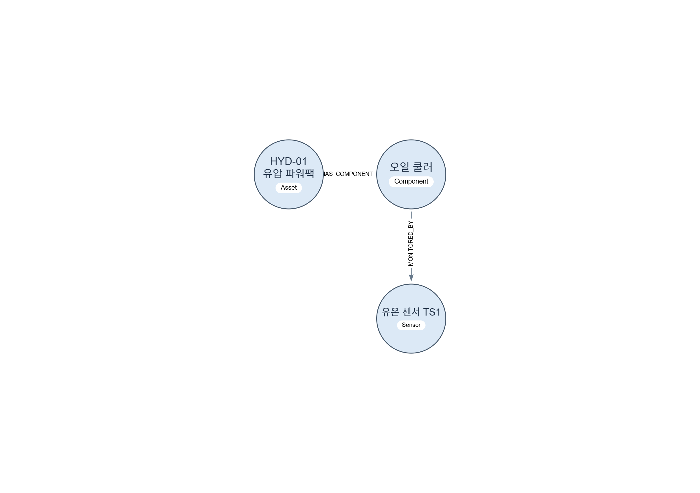
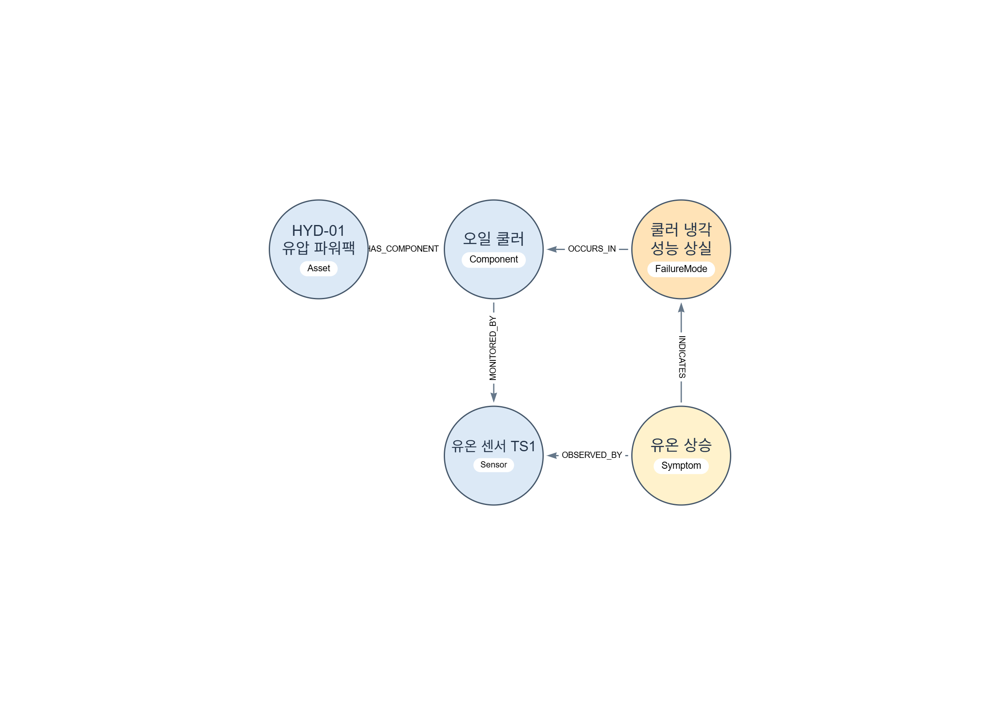
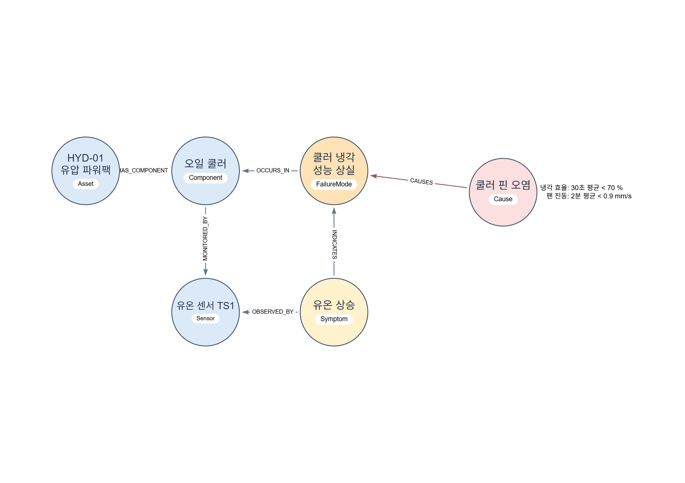
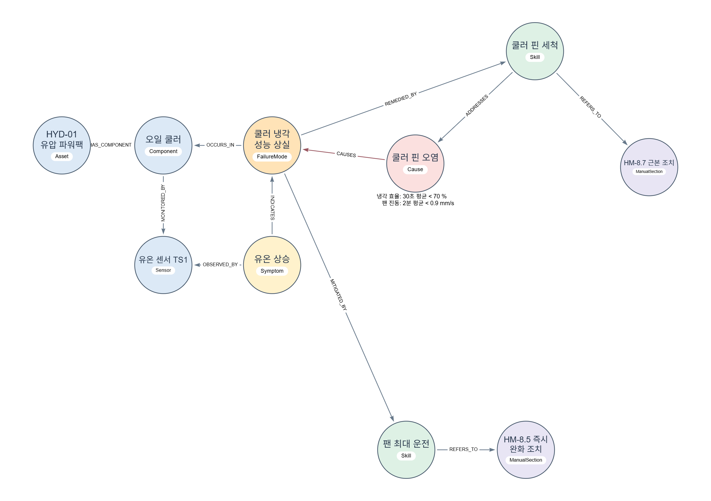
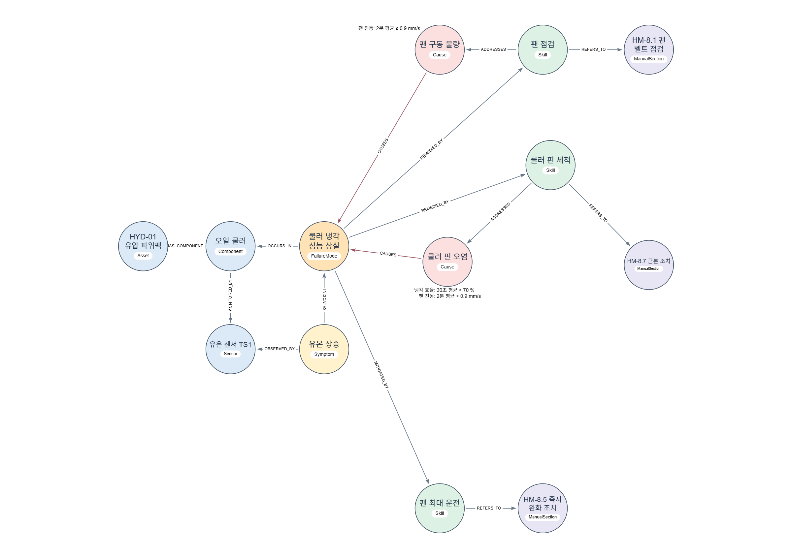
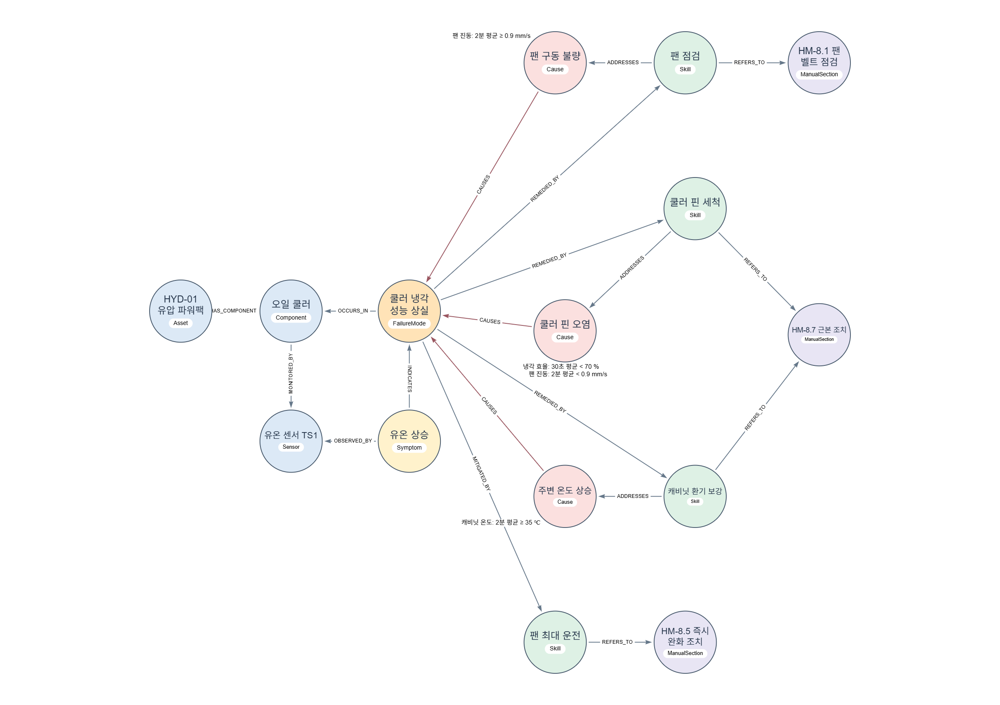
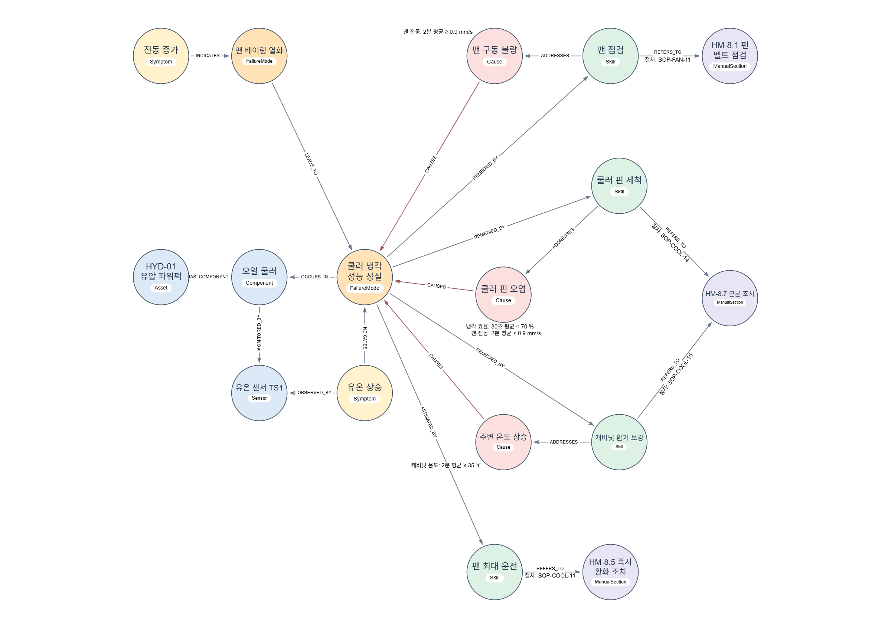
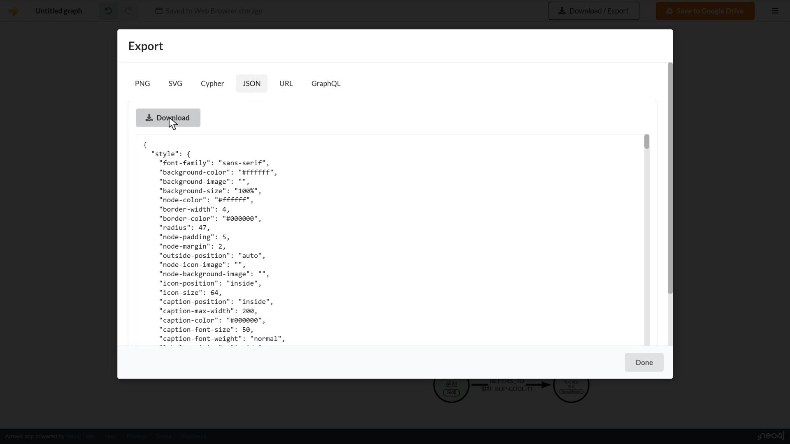
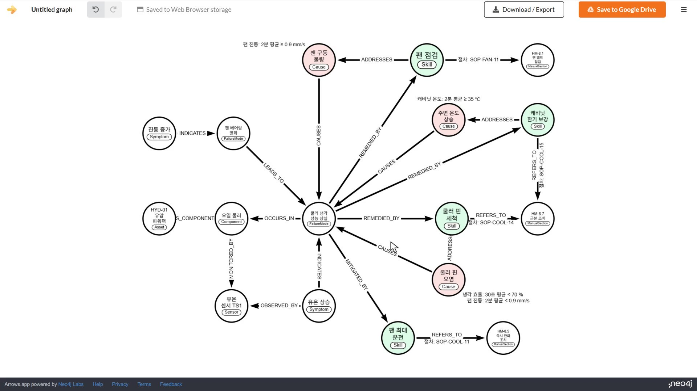

설비와 센서를 연결하기
오일 쿨러가 어느 설비에 속하고 어떤 센서로 상태를 보는지 그립니다. ARROWS 열기 ↗를 누르고 Add Node로 첫 원을 만드세요. 오른쪽 Caption에는 이름, Label +에는 종류를 입력합니다. 입력은 Tab으로 마칩니다.
선택한 원의 테두리를 빈 곳으로 끌면 새 원과 화살표가 함께 생깁니다. 화살표를 선택하고 오른쪽 Type에 관계 이름을 넣으세요. 원이 작으면 빈 곳을 누른 뒤 STYLE → Customize → radius를 78으로 맞춥니다.
| Caption · 이름 | Label · 종류 |
|---|---|
| HYD-01 유압 파워팩 | Asset |
| 오일 쿨러 | Component |
| 유온 센서 TS1 | Sensor |
| 출발 | Type | 도착 |
|---|---|---|
| HYD-01 유압 파워팩 | HAS_COMPONENT | 오일 쿨러 |
| 오일 쿨러 | MONITORED_BY | 유온 센서 TS1 |
이번에 추가 설비 · 오일 쿨러 · 유온 센서

확인 원 3개와 화살표 2개. HYD-01 → 오일 쿨러 → 유온 센서 TS1 순서로 화살표가 이어집니다.
증상과 고장을 구분하기
온도가 오른다는 증상과 냉각 성능을 잃었다는 고장 유형을 구분합니다. 원 두 개를 더 만든 뒤 아래 방향으로 연결하세요. 이미 있는 원 위로 테두리를 끌면 화살표만 추가됩니다. 방향은 화살표를 선택한 뒤 Reverse로 바꿀 수 있습니다.
| Caption | Label |
|---|---|
| 유온 상승 | Symptom |
| 쿨러 냉각 성능 상실 | FailureMode |
| 출발 | Type | 도착 |
|---|---|---|
| 유온 상승 | OBSERVED_BY | 유온 센서 TS1 |
| 유온 상승 | INDICATES | 쿨러 냉각 성능 상실 |
| 쿨러 냉각 성능 상실 | OCCURS_IN | 오일 쿨러 |
이번에 추가 유온 상승 · 냉각 성능 상실

확인 원 5개·화살표 5개. 유온 상승에서 센서와 고장으로 각각 화살표가 나갑니다.
핀 오염의 조건과 조치 붙이기
같은 고장이라도 원인에 따라 조치가 달라집니다. 먼저 쿨러 핀 오염을 추가하고 고장 쪽으로 CAUSES를 연결합니다. 이 원을 선택해 Property +로 두 조건을 적으세요. 두 조건을 함께 만족해야 핀 오염에 해당합니다.
| Caption | Label | Property |
|---|---|---|
| 쿨러 핀 오염 | Cause | 냉각 효율: 30초 평균 < 70 % / 팬 진동: 2분 평균 < 0.9 mm/s |
이번에 추가 핀 오염 · 판별 조건

팬 최대 운전은 온도를 낮추는 완화 조치이고, 쿨러 핀 세척은 오염을 없애는 근본 조치입니다. 두 조치와 근거 매뉴얼을 추가하세요.
| Caption | Label |
|---|---|
| 팬 최대 운전 | Skill |
| 쿨러 핀 세척 | Skill |
| HM-8.5 즉시 완화 조치 | ManualSection |
| HM-8.7 근본 조치 | ManualSection |
| 출발 | Type | 도착 |
|---|---|---|
| 쿨러 핀 오염 | CAUSES | 쿨러 냉각 성능 상실 |
| 쿨러 냉각 성능 상실 | MITIGATED_BY | 팬 최대 운전 |
| 쿨러 냉각 성능 상실 | REMEDIED_BY | 쿨러 핀 세척 |
| 쿨러 핀 세척 | ADDRESSES | 쿨러 핀 오염 |
| 팬 최대 운전 | REFERS_TO | HM-8.5 즉시 완화 조치 |
| 쿨러 핀 세척 | REFERS_TO | HM-8.7 근본 조치 |
이번에 추가 팬 최대 운전 · 핀 세척 · 매뉴얼

확인 원 10개·화살표 11개. 핀 세척은 핀 오염을 가리키고, 팬 최대 운전은 HM-8.5로 이어집니다.
다른 원인으로 가지 넓히기
팬 구동 불량과 주변 온도 상승도 냉각 성능 상실을 일으킬 수 있습니다. 같은 고장 원에 두 가지를 더하고, 각 원인에 맞는 조치와 매뉴얼을 연결하세요. HM-8.7은 기존 원을 함께 사용합니다.
| Caption | Label | Property |
|---|---|---|
| 팬 구동 불량 | Cause | 팬 진동: 2분 평균 ≥ 0.9 mm/s |
| 팬 점검 | Skill | — |
| HM-8.1 팬 벨트 점검 | ManualSection | — |
| 주변 온도 상승 | Cause | 캐비닛 온도: 2분 평균 ≥ 35 ℃ |
| 캐비닛 환기 보강 | Skill | — |
| 출발 | Type | 도착 |
|---|---|---|
| 팬 구동 불량 | CAUSES | 쿨러 냉각 성능 상실 |
| 쿨러 냉각 성능 상실 | REMEDIED_BY | 팬 점검 |
| 팬 점검 | ADDRESSES | 팬 구동 불량 |
| 팬 점검 | REFERS_TO | HM-8.1 팬 벨트 점검 |
이번에 추가 팬 구동 불량 · 팬 점검 · HM-8.1

| 출발 | Type | 도착 |
|---|---|---|
| 주변 온도 상승 | CAUSES | 쿨러 냉각 성능 상실 |
| 캐비닛 환기 보강 | ADDRESSES | 주변 온도 상승 |
| 쿨러 냉각 성능 상실 | REMEDIED_BY | 캐비닛 환기 보강 |
| 캐비닛 환기 보강 | REFERS_TO | HM-8.7 근본 조치 |
이번에 추가 주변 온도 상승 · 캐비닛 환기 보강

확인 원 15개·화살표 19개. 고장으로 들어오는 CAUSES가 3개이고, 근본 조치는 각각의 원인을 가리킵니다. 팬 점검 → HM-8.1의 Type에도 REFERS_TO를 입력합니다.
고장의 연결과 절차 번호 적기
팬 베어링 열화는 냉각 성능 상실로 이어질 수 있습니다. 팬 베어링 열화와 이를 가리키는 진동 증가를 추가하세요.
| Caption | Label |
|---|---|
| 팬 베어링 열화 | FailureMode |
| 진동 증가 | Symptom |
| 출발 | Type | 도착 |
|---|---|---|
| 팬 베어링 열화 | LEADS_TO | 쿨러 냉각 성능 상실 |
| 진동 증가 | INDICATES | 팬 베어링 열화 |
이번에 추가 진동 증가 · 팬 베어링 열화 · 절차 번호

조치에서 매뉴얼로 향하는 화살표를 선택하고 Property +에 이름 절차와 아래 번호를 넣으세요. 같은 매뉴얼 절을 보더라도 실행할 절차는 다릅니다.
| 화살표 출발 | 도착 | 절차 |
|---|---|---|
| 팬 최대 운전 | HM-8.5 | SOP-COOL-11 |
| 쿨러 핀 세척 | HM-8.7 | SOP-COOL-14 |
| 캐비닛 환기 보강 | HM-8.7 | SOP-COOL-15 |
| 팬 점검 | HM-8.1 | SOP-FAN-11 |
확인 원 17개·화살표 21개. 매뉴얼로 이어지는 화살표 4개에 절차 번호가 표시됩니다.
그림을 정리하고 경로 읽기
기존 원의 위치를 유지하면서 위쪽에는 팬 구동 불량, 가운데에는 핀 오염, 아래쪽에는 주변 온도 상승 묶음을 놓습니다. 원인은 연한 빨강, 조치는 연한 초록으로 구분합니다. Ctrl을 누른 채 같은 종류의 원을 선택한 뒤 STYLE → node-color에서 색을 지정하세요.
냉각 효율 46.2 %, 팬 진동 2분 평균 0.575 mm/s, 캐비닛 온도 28 ℃를 세 원인의 조건과 비교하세요. 핀 오염에서 조치와 매뉴얼까지 화살표를 따라 읽어 보세요.
확인 핀 오염의 두 조건에 해당합니다. 근본 조치는 핀 세척 → HM-8.7, 즉시 완화는 팬 최대 운전 → HM-8.5로 이어집니다. 팬 진동 값이 없으면 핀 오염 조건을 모두 확인한 것은 아닙니다.
저장하고 다시 열기
위쪽 Download / Export에서 JSON → Download로 편집 데이터를, PNG → Download로 그림을 저장하세요. 파일 이름은 쿨러_지식그래프.json, 쿨러_지식그래프.png로 알아보기 쉽게 정리합니다.

왼쪽 위 로고 메뉴에서 New → Web Browser storage로 새 그림을 연 뒤, Import → Choose File에서 저장한 JSON을 선택하고 Import를 누릅니다. 새 그림의 기본 빈 원이 남아 있으면 선택해 Delete로 지웁니다.

확인 다시 연 그림에 원 17개·화살표 21개, 원인 조건과 절차 번호 4개가 있습니다.
학교 PC는 재부팅하면 수업 중 저장한 파일이 사라집니다. 본인 결과를 보관하려면 JSON과 PNG를 USB 또는 본인이 사용하는 클라우드에 복사하세요.
다음 실습에서는 이 관계를 스키마와 인스턴스 데이터로 정리합니다. 다음 실습의 제공 시작본을 사용하므로, 오늘 만든 파일이 없어도 시작할 수 있습니다.